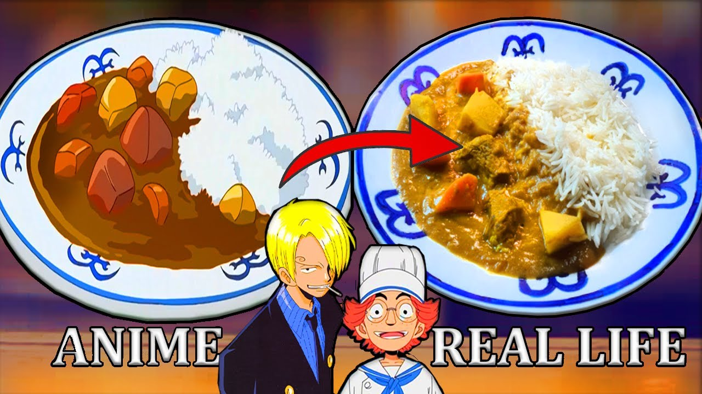

Fried Rice

Tasty and simple recipe, enough to feed a platoon of Marines!
IOnly being in the Marine's kitchen for six months has left Taijo with no confidence in his cooking ability. Sanji shows Taijo that confidence and taking care of the ingredients will allow Taijo to make a simple curry full of flavor. This delicious Marine curry has left the Marine's tastebuds in shock and Taijo with more confidence going forward.
Ingredients
- 3 Carrots (Sliced, 1cm thick)
- 3 Potatoes (cubed, 2cm thick)
- 1 Large white onions (diced)
- 2.5 Sweet apples (grated)
- 4 Tomatoes (sliced, 1 cm thick)
- 1/2 tbsp Freshly grated ginger
- 4 Cloves garlic
- 1.5 Pounds of beef (cut to 2 cm thick, I used chuck roast)
- 33 oz. Beef stock
- 1 cup of Flour
- 1/2 tbsp Curry powder
- 3/4 tsp Turmeric
- 1/2 tbsp Curry powder
- 1/2 tbsp Garam Masala (A homemade mix will stick true to the anime)
- Any additional seasonings you want
- 2.5 cups of Plain Yogurt
- 1 cup of Butter (If you wanna stick true to the anime use Ghee butter instead) Oil (Whatever you wanna use to brown the onions, I used Ghee)
- Rice (depends on how much you cooking)
Steps
- Marinate your beef in the ginger, garlic, turmeric and yogurt (Marinating overnight will allow the meat to become more tender and flavorful when you cook it).
- Slice carrots and tomatoes, cube potatoes and grate apples.
- Chop onions and then sweat them on a high heat until they are soft. Reduce heat and brown, once browned set aside.
- Put butter in a pot and heat until it’s melted. Add the flour and cook it a little on a low heat. Add your curry powder and garam masala then keep stirring until it becomes very fragrant.
- Slowly add stock while stirring.
- Add your browned onions, carrot, potato, tomato and grated apple.
- Bring mixture to a boil and then turn down to simmer. Place a lid on top (Stir often so it doesn’t burn).
- Cook your rice before your curry is done so you can plate it all while it’s hot.
- After about 1 1/2 hours to 2 hours it should be done? Idk what your stove is like.
- Enjoy a taste of the East Blue!.